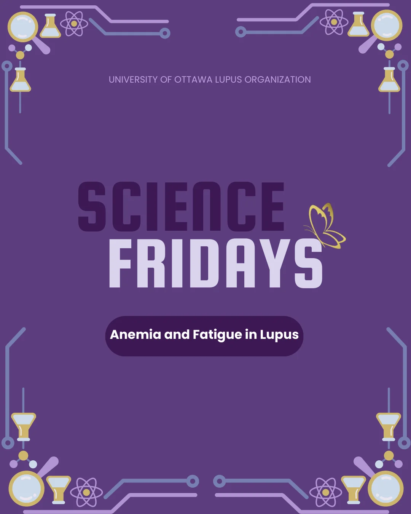
.png)
Raising awareness, supporting education, and bringing the uOttawa community together in support of lupus initiatives.
Raising awareness, supporting education, and bringing the uOttawa community together in support of lupus initiatives.
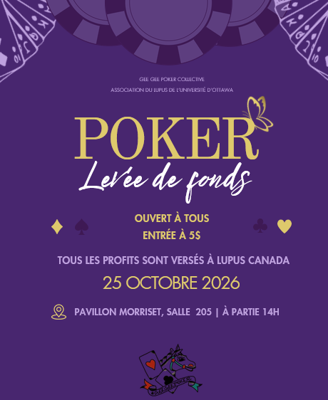
Upcoming Event
Presented by the Gee Gee Poker Collective and the uOttawa Lupus Organization.
Date: October 25, 2026
Time: From 2:00 PM
Location: Morisset Hall, Room 205
Entrance Fee: $5
Open to everyone. All proceeds support Lupus Canada.
The uOttawa Lupus Organization is dedicated to raising awareness about lupus, supporting those affected by it, and educating our community about this often invisible illness. Through advocacy, collaboration, and research engagement, we strive to create a compassionate and informed environment that empowers individuals living with lupus and inspires action toward better understanding and care.
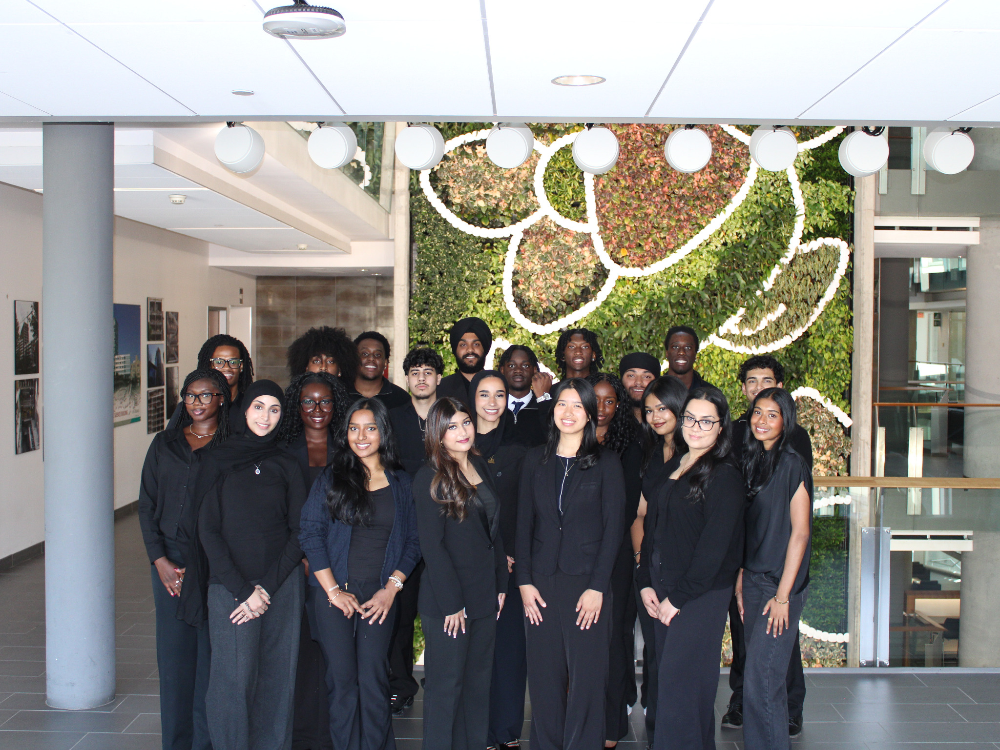
The People Behind UOLO
Meet the students working behind the scenes to support lupus awareness, education, fundraising, events, outreach, research, and community initiatives at uOttawa.
President & Founder
5th Year
Biomedical Science & Psychology
Co-Vice President
4th Year
Biomedical Science
Co-Vice President
4th Year
Biology
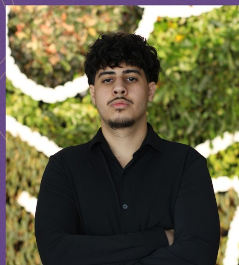
VP of Internal Affairs
3rd Year
Chemical Engineering
VP of Bilingual Affairs
4th Year
Accounting
VP of Bilingual Affairs
2nd Year
Chemical Engineering
VP of Marketing
3rd Year
Honours Psychology + Microprogram in Entrepreneurship, Creativity and Social Innovation (Business)
VP of Marketing
4th Year
Psychology
Director of Marketing
2nd Year
International Development & Globalization
Director of Marketing
3rd Year
Biomedical Science
Director of Marketing
3rd Year
Human Kinetics
Event Photographer
4th Year
Mechanical Engineering
VP External
3rd Year
Nutritional Science
VP External
2nd Year
Bachelor in Commerce - Finance
VP External
4th Year
Biology & Psychology
VP Events
3rd Year
Biomedical Science
VP Events
4th Year
Psychology
VP Events
5th Year
Biology & Psychology
VP of Finance
2nd Year
Bachelor in Commerce - Finance
VP of Finance
3rd Year
Biomedical Science
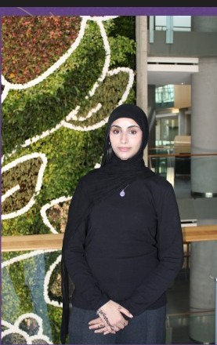
VP Research
3rd Year
Health Sciences
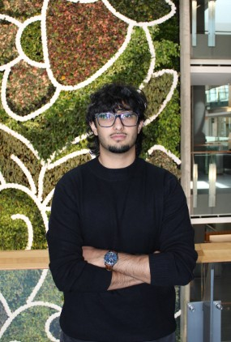
VP Research
3rd Year
Biomedical Sciences
General Member Coordinator
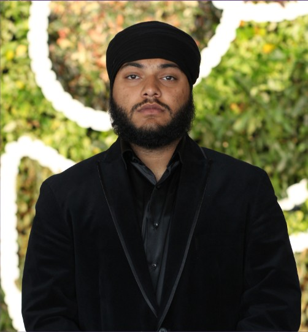
VP of Website Development
3rd Year
Computer Science
Lupus is a chronic autoimmune disease. This means the immune system can mistakenly attack healthy cells and tissues in the body. Symptoms and severity can vary from person to person.
Lupus can affect people of different ages and backgrounds. It is diagnosed more often in women and is more common in some racial and ethnic communities.
We encourage visitors to use trusted health organizations for more detailed information about lupus.
Visit Lupus CanadaThere are different ways to get involved with the uOttawa Lupus Organization depending on your interests and availability.
Join UOLO for the 2026–2027 year, stay updated on upcoming events, volunteer opportunities, educational campaigns, and collaborations with health organizations.
Apply to Become a MemberHelp with event-day activities, awareness initiatives, high school presentations, photography, and other club projects.
Volunteer With UOLOExecutive applications will be available during hiring periods. Positions, responsibilities, and deadlines will be announced when applications open.
Ask About OpportunitiesUOLO Weekly Education Series
Every Friday, UOLO highlights a different part of lupus science, from how the disease affects the body to diagnosis, treatment, monitoring, and emerging research.
Latest Science Fridays · English & Français
Browse the slides using the arrows. English and French pages alternate.

SCIENCE
Anemia and Fatigue in Lupus
FRIDAYS
UNIVERSITY OF OTTAWA LUPUS ORGANIZATION
VENDREDI
Comment le lupus affecte les
cellules sanguines
SCIENTIFIQUE
ASSOCIATION LUPUS DE L’UNIVERSITÉ D’OTTAWA
What is anemia?
Red blood cells contain hemoglobin, a protein
that carries oxygen from the lungs to the rest
of the body.
Anemia occurs when hemoglobin levels are
below the expected range, reducing the
blood’s oxygen-carrying capacity.
Anemia affects approximately 50% of people with SLE at some
point, although its causes can vary.
This can contribute to:
Persistent fatigue and weakness
Dizziness or lightheadedness
Shortness of breath
Headaches
A rapid heartbeat
UNIVERSITY OF OTTAWA LUPUS ORGANIZATION
Qu’est-ce que l’anémie ?
Les globules rouges contiennent de
l’hémoglobine, une protéine qui transporte
l’oxygène des poumons vers le reste du corps.
L’anémie survient lorsque le taux
d’hémoglobine est inférieur aux valeurs
normales, ce qui réduit la capacité du sang à
transporter l’oxygène.
L’anémie touche environ 50 % des personnes atteintes de lupus
érythémateux systémique (LES) à un moment donné de leur
maladie, bien que ses causes puissent varier.
Cela peut entraîner :
Une fatigue persistante et une faiblesse
Des étourdissements ou des sensations de
vertige
Un essoufflement
Des maux de tête
Une accélération du rythme cardiaque
UNIVERSITY OF OTTAWA LUPUS ORGANIZATION
Why can lupus cause
anemia?
More than one mechanism can contribute at the same time,
and there are different types of anemia
Iron deficiency: Blood loss or inadequate iron
availability can limit hemoglobin production
Kidney involvement: Lupus nephritis or
chronic kidney damage can reduce
erythropoietin production
Medication effects: Some treatments can
suppress bone marrow activity
In lupus, anemia can develop through
several different pathways:
Chronic inflammation: Disrupts iron
availability and red blood cell production
Autoimmune destruction: Antibodies
can target and destroy red blood cells
UNIVERSITY OF OTTAWA LUPUS ORGANIZATION
Pourquoi le lupus peut-il
provoquer de
l’anémie ?
Plusieurs de ces mécanismes peuvent contribuer à l’anémie
simultanément, et il existe différents types d’anémie.
Carence en fer : Les pertes de sang ou une
disponibilité insuffisante du fer peuvent limiter la
production d’hémoglobine.
Atteinte rénale : La néphrite lupique ou les lésions
rénales chroniques peuvent réduire la production
d’érythropoïétine.
Effets des médicaments : Certains traitements
peuvent supprimer l’activité de la moelle osseuse.
Dans le lupus, l’anémie peut se développer par
différents mécanismes :
Inflammation chronique : Elle perturbe la
disponibilité du fer et la production de
globules rouges.
Destruction auto-immune : Les anticorps
peuvent cibler et détruire les globules rouges.
ASSOCIATION LUPUS DE L’UNIVERSITÉ D’OTTAWA
Anemia of
inflammation
Anemia of inflammation (also called anemia
of chronic disease) is the most common form
of anemia described in SLE.
During persistent inflammation, cytokines
such as IL-6 can increase the production of a
hormone called hepcidin
Inflammation can also:
Reduce the body's erythropoietin (EPO) response
Make bone marrow cells less responsive to EPO
Shorten the lifespan of circulating red blood cells
Hepcidin reduces iron release
from storage cells and limits
iron absorption in the gut.
The result? Iron may be present
in the body, but less is available
for the bone marrow to make
new red blood cells.
ASSOCIATION LUPUS DE L’UNIVERSITÉ D’OTTAWA
L’anémie
inflammatoire
L’anémie inflammatoire (également appelée anémie
des maladies chroniques) est la forme d’anémie la
plus fréquemment décrite chez les personnes
atteintes de lupus érythémateux systémique (LES).
Lors d’une inflammation persistante, des cytokines
comme l’IL-6 peuvent augmenter la production
d’une hormone appelée hepcidine.
L’inflammation peut également :
Réduire la réponse de l’organisme à l’érythropoïétine (EPO).
Rendre les cellules de la moelle osseuse moins sensibles à l’EPO.
Raccourcir la durée de vie des globules rouges en circulation.
L’hepcidine réduit la libération du fer
par les cellules de stockage et limite
son absorption dans l’intestin.
Le résultat ? Le fer peut être présent
dans l’organisme, mais une quantité
moindre est disponible pour permettre
à la moelle osseuse de produire de
nouveaux globules rouges.
UNIVERSITY OF OTTAWA LUPUS ORGANIZATION
Iron-deficiency anemia
An important distinction: Low circulating iron does not automatically
mean iron deficiency. Inflammation can trap iron in storage, and so
making it less available for red blood cell production.
Iron deficiency and anemia of inflammation can also occur together.
Possible contributors in SLE include:
Heavy menstrual bleeding
Gastrointestinal blood loss
Reduced dietary iron intake
Other causes of impaired iron
absorption or increased iron loss
Unlike anemia of inflammation, iron-deficiency
anemia is true shortage of iron
Iron is essential for producing hemoglobin, so
inadequate iron limits the body's ability to make
healthy red blood cells
UNIVERSITY OF OTTAWA LUPUS ORGANIZATION
L’anémie ferriprive
(carence en fer)
Une distinction importante : Une faible concentration de fer dans le sang
ne signifie pas automatiquement qu’il existe une carence en fer.
L’inflammation peut emprisonner le fer dans les réserves de l’organisme,
le rendant ainsi moins disponible pour la production de globules rouges.
Une carence en fer et une anémie inflammatoire peuvent également
survenir simultanément.
Les facteurs pouvant contribuer à une
carence en fer chez les personnes atteintes
de LES comprennent :
Des menstruations abondantes
Des pertes de sang gastro-intestinales
Un apport alimentaire insuffisant en fer
D’autres causes de mauvaise absorption
du fer ou de pertes accrues de fer
Contrairement à l’anémie inflammatoire,
l’anémie ferriprive résulte d’une carence réelle
en fer dans l’organisme.
Le fer est essentiel à la production de
l’hémoglobine. Une quantité insuffisante de fer
limite donc la capacité de l’organisme à produire
des globules rouges sains.
ASSOCIATION LUPUS DE L’UNIVERSITÉ D’OTTAWA
Autoimmune
hemolytic anemia
In autoimmune hemolytic anemia (AIHA), the
immune system produces autoantibodies that
attach to red blood cells.
These cells can then be recognized and
destroyed prematurely, often through immune
activity involving the spleen.
Possible signs include:
Fatigue and weakness
Shortness of breath
Jaundice (yellowing of the skin or eyes)
Dark urine
A rapid heartbeat
AIHA is less common than anemia of inflammation, but it can be serious
and requires medical assessment.
This process is called
hemolysis.
AIHA affects approximately 5–
10% of people with SLE and
anemia.
UNIVERSITY OF OTTAWA LUPUS ORGANIZATION
L’anémie hémolytique
auto-immune
Dans l’anémie hémolytique auto-immune (AHAI), le
système immunitaire produit des auto-anticorps
qui se fixent aux globules rouges.
Ces cellules peuvent alors être reconnues et
détruites prématurément par le système
immunitaire, souvent par l’intermédiaire de la rate.
Les signes possibles comprennent :
Une fatigue et une faiblesse
Un essoufflement
Une jaunisse (jaunissement de la peau ou des yeux)
Des urines foncées
Une accélération du rythme cardiaque
L’AHAI est moins fréquente que l’anémie inflammatoire, mais elle peut être grave
et nécessite une évaluation médicale.
Ce processus est appelé
hémolyse.
L’AHAI touche environ 5 à 10 %
des personnes atteintes de
LES présentant une anémie.
ASSOCIATION LUPUS DE L’UNIVERSITÉ D’OTTAWA
The kidney connection &
investigating anemia
The kidneys produce erythropoietin (EPO),
which is a hormone that signals to the bone
marrow to make red blood cells.
When kidney function is impaired, including in
some cases of lupus nephritis, EPO production
can decrease.
To investigate anemia, healthcare professionals may use:
Complete blood count (CBC): Measures hemoglobin and red blood cell indices.
Reticulocyte count: Helps assess whether the bone marrow is producing new
red blood cells.
Iron studies: Help distinguish iron deficiency from anemia of inflammation.
Hemolysis tests: Such as bilirubin, haptoglobin, and a direct antiglobulin
(Coombs) test.
Kidney function tests: Help identify possible renal contributions.
The appropriate tests depend on the suspected cause and clinical context.
This can contribute to
anemia even when iron
levels are not the main
issue
UNIVERSITY OF OTTAWA LUPUS ORGANIZATION
Le rôle des reins et
l'investigation de l'anémie
Les reins produisent l'érythropoïétine (EPO),
une hormone qui stimule la moelle osseuse afin
qu'elle produise des globules rouges.
Lorsque la fonction rénale est altérée,
notamment dans certains cas de néphrite
lupique, la production d'EPO peut diminuer.
Pour investiguer l'anémie, les professionnels de la santé peuvent avoir recours aux examens suivants :
Formule sanguine complète (FSC) : Mesure le taux d'hémoglobine et évalue les indices
érythrocytaires.
Numération des réticulocytes : Permet d'évaluer si la moelle osseuse produit suffisamment de
nouveaux globules rouges.
Bilan martial : Permet de différencier une carence en fer d'une anémie inflammatoire.
Tests d'hémolyse : Comprennent notamment le dosage de la bilirubine, de l'haptoglobine et le test
direct à l'antiglobuline (test de Coombs).
Tests de la fonction rénale : Permettent d'identifier une éventuelle contribution des reins à
l'anémie.
Les examens appropriés dépendent de la cause suspectée et du contexte clinique.
Cela peut contribuer à
l'apparition d'une anémie,
même lorsque les taux de fer
ne constituent pas le
principal problème.
UNIVERSITY OF OTTAWA LUPUS ORGANIZATION
Anemia and the fatigue
burden
An important distinction: Fatigue in lupus is multifactorial. Disease
activity, pain, sleep disturbances, medication effects, and other health
conditions can also contribute. Anemia may be one piece of the fatigue
puzzle, so persistent fatigue deserves attention and assessment—not the
assumption that anemia is the only cause.
Increased physical strain: The heart may beat
faster to help circulate available oxygen.
Everyday activities can feel more demanding,
and shortness of breath or a racing heartbeat
may occur.
Mental fatigue: Anemia can also be associated
with difficulty concentrating and feeling
mentally drained.
Fatigue is already a common symptom of lupus.
Anemia can add another layer to that burden.
How can anemia contribute to fatigue?
Reduced oxygen delivery: Hemoglobin carries oxygen
to body tissues. When hemoglobin is low, less oxygen
is delivered, which can contribute to low energy and
weakness.
UNIVERSITY OF OTTAWA LUPUS ORGANIZATION
L'anémie et le fardeau de
la fatigue
Une distinction importante : La fatigue liée au lupus est multifactorielle.
L'activité de la maladie, la douleur, les troubles du sommeil, les effets
secondaires des médicaments et d'autres problèmes de santé peuvent
également y contribuer. L'anémie peut donc représenter une partie du
problème, mais elle n'en est pas nécessairement la seule cause. Une fatigue
persistante mérite une attention particulière et une évaluation médicale,
plutôt que de supposer que l'anémie en est l'unique responsable.
Augmentation de l'effort physique : Le cœur peut
battre plus rapidement afin de favoriser la
circulation de l'oxygène disponible. Les activités
quotidiennes peuvent alors sembler plus
exigeantes, et un essoufflement ou des
palpitations peuvent survenir.
Fatigue mentale : L'anémie peut également être
associée à des difficultés de concentration et à
une sensation d'épuisement mental.
La fatigue est déjà un symptôme fréquent du lupus.
L'anémie peut accentuer davantage cette fatigue.
Comment l'anémie peut-elle contribuer à la fatigue ?
Diminution de l'apport en oxygène ?
L'hémoglobine transporte l'oxygène vers les tissus de
l'organisme. Lorsque le taux d'hémoglobine est faible,
moins d'oxygène est acheminé aux tissus, ce qui peut
entraîner une baisse d'énergie et une sensation de
faiblesse.
UNIVERSITY OF OTTAWA LUPUS ORGANIZATION
Also new · English & Français
Browse the slides using the arrows. English and French pages alternate.
SCIENCE
How Lupus Affects Blood
Cells
FRIDAYS
UNIVERSITY OF OTTAWA LUPUS ORGANIZATION
VENDREDI
Comment le lupus affecte les
cellules sanguines
SCIENTIFIQUE
ASSOCIATION LUPUS DE L’UNIVERSITÉ D’OTTAWA
Autoantibody-Mediated
Destruction
In lupus, the immune system loses self-
tolerance and produces autoantibodies
that directly target surface antigens on
mature blood cells. This leads to
autoimmune cytopenias via two primary
mechanisms:
Complement-Mediated Cell Destruction:
When autoantibodies bind to cell membranes, they can activate the
classical complement pathway. This triggers the formation of the
Membrane Attack Complex (MAC), which punches holes in the cell
membranes, causing direct intravascular lysis (cell bursting).
Opsonization and Phagocytosis:
IgG or IgM autoantibodies coat
(opsonize) red blood cells (RBCs),
white blood cells (WBCs), or
platelets. As these coated cells pass
through the spleen and liver,
macrophages recognize the
antibody tails (Fc region) and engulf
them.
UNIVERSITY OF OTTAWA LUPUS ORGANIZATION
Destruction médiée par
les auto-anticorps
Dans le lupus, le système immunitaire
perd sa tolérance au soi et produit des
auto-anticorps qui ciblent directement
les antigènes de surface des cellules
sanguines matures. Il en résulte des
cytopénies auto-immunes, selon deux
mécanismes principaux :
Destruction cellulaire médiée par le complément : Lorsque des auto-
anticorps se fixent aux membranes cellulaires, ils peuvent activer la voie
classique du complément. Cela déclenche la formation du complexe
d'attaque membranaire (CAM), qui perfore les membranes cellulaires et
provoque une lyse intravasculaire directe (éclatement de la cellule).
Opsonisation et phagocytose : Des
auto-anticorps de type IgG ou IgM
recouvrent (opsonisent) les
globules rouges (GR), les globules
blancs (GB) ou les plaquettes.
Lorsque ces cellules recouvertes
traversent la rate et le foie, les
macrophages reconnaissent la
queue des anticorps (région Fc) et
les englobent.
ASSOCIATION LUPUS DE L’UNIVERSITÉ D’OTTAWA
Cellular Impact
Red Blood Cells (Anemia):
Autoantibodies target RBC antigens, causing the immune system to
mistakenly produce antibodies that attack and destroy your own red
blood cells. This is known as Autoimmune Hemolytic Anemia (AIHA). This is
characteristically identified by a positive Direct Antiglobulin Test
(DAT/Coombs test).
White Blood Cells
(Leukopenia/Lymphopenia):
Antileukocyte antibodies target
lymphocytes and neutrophils.
Lymphopenia (specifically a low
T-lymphocyte count) is a highly
specific criteria marker for SLE
activity.
Platelets (Thrombocytopenia):
Anti-platelet antibodies target surface
glycoproteins (like GPIIb/IIIa), mimicking
the pathology of Immune
Thrombocytopenia (ITP) and leading to
severe bleeding risks if counts drop
dangerously low.
UNIVERSITY OF OTTAWA LUPUS ORGANIZATION
Impact Cellulaire
Globules rouges (anémie) : Les auto-anticorps ciblent les antigènes des
GR, ce qui amène le système immunitaire à produire par erreur des
anticorps qui attaquent et détruisent vos propres globules rouges. On
parle alors d'anémie hémolytique auto-immune (AHAI). Elle se reconnaît
typiquement à un test direct à l'antiglobuline (test de Coombs direct)
positif.
Globules blancs
(leucopénie/lymphopénie) : Les
anticorps anti-leucocytes ciblent
les lymphocytes et les
neutrophiles. La lymphopénie
(plus précisément une faible
numération des lymphocytes T)
est un marqueur critère
hautement spécifique de
l'activité du LES.
Plaquettes (thrombocytopénie) : Les
anticorps antiplaquettaires ciblent des
glycoprotéines de surface (comme la
GPIIb/IIIa), reproduisant la physiopathologie
du purpura thrombopénique immunologique
(PTI) et entraînant un risque hémorragique
grave lorsque la numération chute à un
niveau dangereusement bas.
ASSOCIATION LUPUS DE L’UNIVERSITÉ D’OTTAWA
Bone Marrow
Responses
While cells are being destroyed, the bone marrow
should ideally ramp up production. But in lupus,
the bone marrow is also under attack, leading to
inadequate cell production. Autoantibodies can
enter the bone marrow space to directly attack
progenitor cells or induce apoptosis (programmed
cell death) in stromal cells that support blood cell
development.
Chronic inflammation from SLE also triggers the liver to overproduce hepcidin,
which is a hormone that blocks iron absorption in the gut and traps existing iron
inside macrophages. This deprives developing RBCs of the iron needed to make
hemoglobin, resulting in slowed erythropoiesis (red cell production).
High levels of inflammatory
cytokines, particularly Type I
Interferons (IFN-α) and Tumour
Necrosis Factor-α (TNF-α), also alter
the bone marrow
microenvironment. They inhibit
hematopoietic stem cell (HSC)
proliferation and differentiation.
UNIVERSITY OF OTTAWA LUPUS ORGANIZATION
Réponses de la
moelle osseuse
Pendant que les cellules sont détruites, la moelle osseuse
devrait idéalement augmenter sa production. Or, dans le
lupus, la moelle osseuse est elle aussi attaquée, ce qui
entraîne une production cellulaire insuffisante. Les auto-
anticorps peuvent pénétrer dans l'espace médullaire pour
attaquer directement les cellules progénitrices ou induire
l'apoptose (mort cellulaire programmée) des cellules
stromales qui soutiennent le développement des cellules
sanguines.
L'inflammation chronique liée au LES pousse également le foie à produire trop
d'hepcidine, une hormone qui bloque l'absorption du fer dans l'intestin et piège le
fer déjà présent à l'intérieur des macrophages. Les GR en développement sont
ainsi privés du fer nécessaire à la synthèse de l'hémoglobine, ce qui ralentit
l'érythropoïèse (production des globules rouges).
Des taux élevés de cytokines
inflammatoires, en particulier les
interférons de type I (IFN-α) et le
facteur de nécrose tumorale α (TNF-
α), modifient également le
microenvironnement de la moelle
osseuse. Ils inhibent la prolifération
et la différenciation des cellules
souches hématopoïétiques (CSH).
ASSOCIATION LUPUS DE L’UNIVERSITÉ D’OTTAWA
Earliest Signs of SLE
Blood cells are constantly exposed to circulating autoantibodies, immune
complexes, and inflammatory cytokines. Unlike organs protected by
tissue barriers, the vascular compartment is the primary highway for the
autoimmune response, making it an immediate target.
Even mild drops in cell lines
trigger noticeable physiological
shifts (e.g., fatigue from mild
anemia, frequent minor
infections from leukopenia) or
are easily caught on routine
screening long before organ
damage occurs.
Abnormalities in hematocytes can often predate
symptoms of SLE by months or even years.
Autoantibodies (like ANA, anti-dsDNA, and anti-
Ro/La) can circulate in the blood for up to a decade
before clinical lupus criteria are met, silently
altering blood cell survival rates early in the disease
spectrum.
UNIVERSITY OF OTTAWA LUPUS ORGANIZATION
Premiers signes du
LES
Les cellules sanguines sont constamment exposées aux auto-anticorps
circulants, aux complexes immuns et aux cytokines inflammatoires.
Contrairement aux organes protégés par des barrières tissulaires, le
compartiment vasculaire est la principale voie de circulation de la
réponse auto-immune, ce qui en fait une cible immédiate.
Même de légères baisses des
lignées cellulaires entraînent des
changements physiologiques
perceptibles (p. ex., fatigue due à
une anémie légère, infections
mineures fréquentes dues à une
leucopénie) ou sont facilement
détectées lors d'un dépistage de
routine, bien avant l'apparition
d'une atteinte d'organe.
Les anomalies des cellules sanguines précèdent
souvent les symptômes du LES de plusieurs mois,
voire de plusieurs années. Des auto-anticorps
(comme les AAN, les anti-ADNdb et les anti-Ro/La)
peuvent circuler dans le sang jusqu'à dix ans avant
que les critères cliniques du lupus ne soient remplis,
altérant silencieusement la survie des cellules
sanguines dès les premiers stades du spectre de la
maladie.
ASSOCIATION LUPUS DE L’UNIVERSITÉ D’OTTAWA
Complete Blood Count
(CBC) Interpretation
A Complete Blood Count (CBC) is a powerful tool
for tracking lupus, as the disease leaves distinct
patterns across your blood cells. When checking
red blood cells, a drop in hemoglobin reveals
anemia. Doctors look at the reticulocyte
(immature red cell) count to see if the bone
marrow is trying to replace destroyed cells or if it is
too suppressed to keep up.
A low platelet count, or thrombocytopenia, reveals how lupus affects the
body's clotting mechanisms. This deficiency occurs when anti-platelet
autoantibodies target and destroy healthy platelets in the bloodstream.
Finding a significantly low platelet count is an important clinical warning
sign, as it can sometimes point to a secondary condition called
Antiphospholipid Syndrome (APS), which requires more critical care.
White blood cells provide a clear
snapshot of active lupus flares. A
low overall white blood cell count is
a classic hallmark of the disease,
driven mostly by a severe shortage
of lymphocytes. When these
immune cells drop, it is a strong
signal to clinicians that systemic
disease activity is high.
UNIVERSITY OF OTTAWA LUPUS ORGANIZATION
Interprétation de la formule
sanguine complète (FSC)
La formule sanguine complète (FSC) est un outil
précieux pour suivre le lupus, car la maladie laisse
des profils distincts dans vos cellules sanguines.
Lorsqu'on examine les globules rouges, une baisse
de l'hémoglobine révèle une anémie. Les
médecins consultent la numération des
réticulocytes (globules rouges immatures) pour
déterminer si la moelle osseuse tente de
remplacer les cellules détruites ou si elle est trop
atteinte pour y arriver.
Une faible numération plaquettaire, ou thrombocytopénie, montre
comment le lupus affecte les mécanismes de coagulation de l'organisme.
Ce déficit survient lorsque des auto-anticorps antiplaquettaires ciblent et
détruisent des plaquettes saines dans la circulation sanguine. Une
numération plaquettaire nettement basse est un signal d'alarme clinique
important, car elle peut parfois indiquer une affection secondaire appelée
syndrome des antiphospholipides (SAPL), qui nécessite une prise en charge
plus urgente.
Les globules blancs offrent un portrait
clair des poussées actives de lupus. Une
numération globale de globules blancs
basse est une caractéristique classique
de la maladie, causée surtout par une
grave pénurie de lymphocytes. Lorsque
ces cellules immunitaires diminuent, c'est
un signal fort, pour les cliniciens, que
l'activité systémique de la maladie est
élevée.
ASSOCIATION LUPUS DE L’UNIVERSITÉ D’OTTAWA
Archive
Select a previous week to open its Science Friday.

Science Friday · September 18, 2026
Cutaneous lupus is a form of lupus that primarily affects the skin. It happens when the immune system causes inflammation in the skin, and UV light can trigger or worsen these reactions.
Acute cutaneous lupus
Subacute cutaneous lupus
Chronic cutaneous lupus

Overview
Cutaneous lupus affects the skin and can appear in different forms. Some rashes are temporary and heal without scarring, while others can leave longer-lasting skin changes.
Ultraviolet (UV) light can trigger or worsen lupus-related skin reactions.

Subtype 1
Acute cutaneous lupus (ACLE) often appears as a red, inflamed rash across the cheeks and bridge of the nose.
The rash commonly spreads across the cheeks and nose.
It is often triggered or worsened by ultraviolet light.
Temporary or persistent changes in skin colour can still occur.
ACLE is also strongly associated with systemic lupus (SLE).

Subtype 2
Subacute cutaneous lupus (SCLE) often appears on sun-exposed areas, especially the chest, back, and arms.
SCLE usually does not scar, but it can leave lighter or darker areas of skin behind.
Some cases can be drug-induced.

Subtype 3
Chronic cutaneous lupus includes discoid lupus erythematosus (DLE), one of the most common forms of chronic cutaneous lupus.
Unlike ACLE and SCLE, discoid lesions can cause permanent scarring and permanent changes in skin colour.

Why It Matters
Prolonged inflammation in discoid lupus can damage deeper structures, including hair follicles.
If a follicle is destroyed and replaced by scar tissue, hair may not grow back.
Scarring can permanently change the texture of affected skin.
Scarring can also permanently alter skin pigmentation.
This is why recognizing and treating active lesions early is important.

Diagnosis
Cutaneous lupus can resemble other skin conditions such as rosacea or psoriasis, so appearance alone may not be enough for diagnosis.
A small sample of affected skin is examined under a microscope for inflammation and tissue damage.
Special antibodies can help reveal characteristic immune protein deposits in the skin.

Key Takeaways
It can appear in acute, subacute, and chronic forms.
Photosensitivity is an important part of cutaneous lupus and can contribute to flare-ups after UV exposure.
ACLE and SCLE usually do not scar, while discoid lupus can cause permanent damage.
Diagnosis may involve clinical assessment, skin biopsy, and direct immunofluorescence.

September 4, 2026
Research Angle
Example Science Focus

September 11, 2026
Research Angle
Example Science Focus

September 18, 2026
Research Angle
Example Science Focus

September 25, 2026
Research Angle
Example Science Focus

October 2, 2026
Research Angle
Example Science Focus

October 9, 2026
Research Angle
Example Science Focus

October 16, 2026
Research Angle
Example Science Focus

October 23, 2026
Research Angle
Example Science Focus

October 30, 2026
Research Angle
Example Science Focus
For more information, visit our Instagram.
Science Fridays are for education and awareness and are not a substitute for medical advice.
Support the uOttawa Lupus Organization's fundraising efforts in support of Lupus Canada.
Donations made through our official CanadaHelps fundraiser support Lupus Canada and its work in lupus awareness, education, research, and support.
DonateWe are grateful to the organizations and businesses that support the uOttawa Lupus Organization and help us raise awareness, support events, and grow our impact.
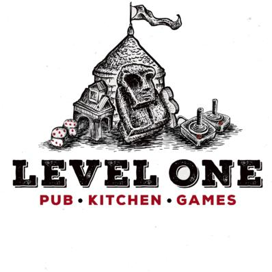
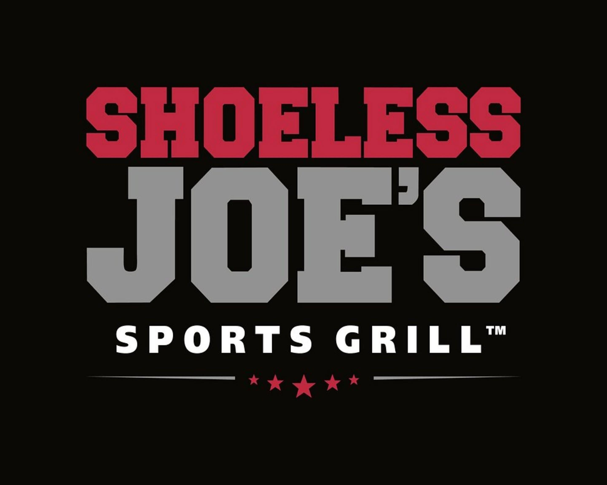
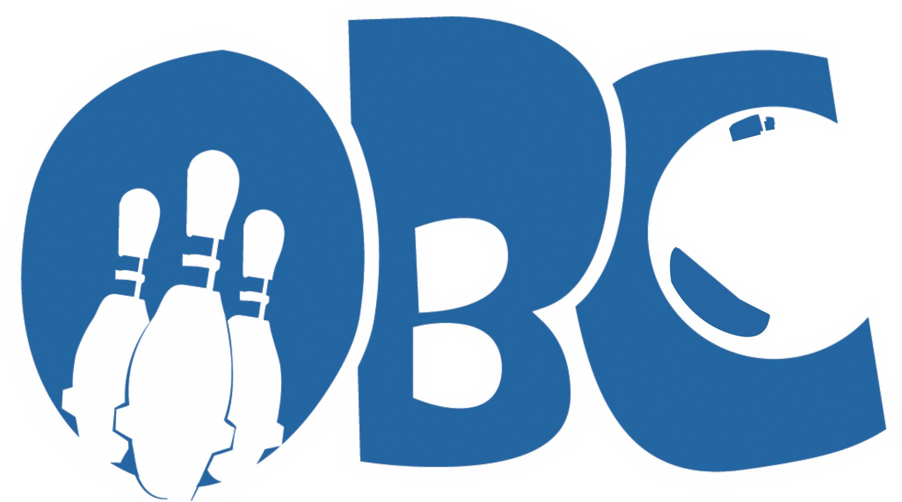
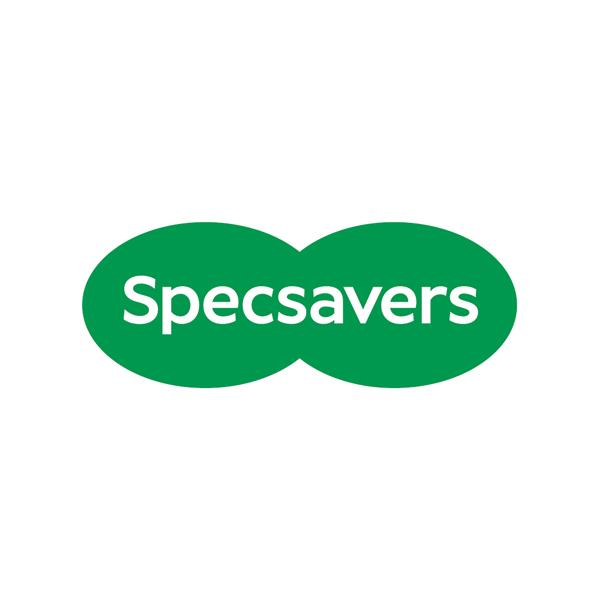
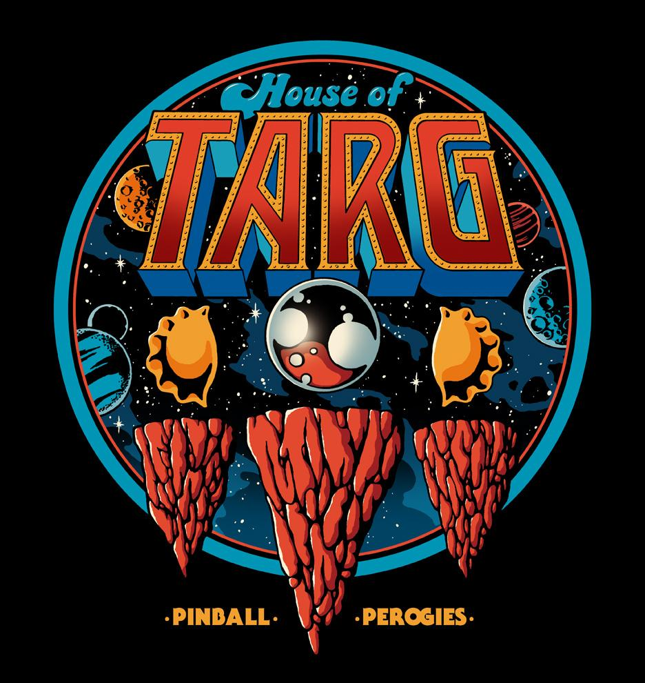
Partner with UOLO to support lupus awareness initiatives, student events, and community outreach.
Sponsorship EnquiriesStudent organizations, community groups, health organizations, and businesses are welcome to reach out about potential collaborations.
Collaborate With UOLOHave a question, want to collaborate, or want to learn more about the uOttawa Lupus Organization? Reach out to us.
Questions about UOLO, events, membership, volunteering, or club activities.
Email UOLOInterested in sponsoring an event or collaborating with the uOttawa Lupus Organization?
Contact UsSchools interested in lupus awareness presentations can contact UOLO to learn more about available opportunities.
Book a School Visit
Follow UOLO
Stay connected with the uOttawa Lupus Organization for event announcements, awareness initiatives, fundraising updates, and club activities.